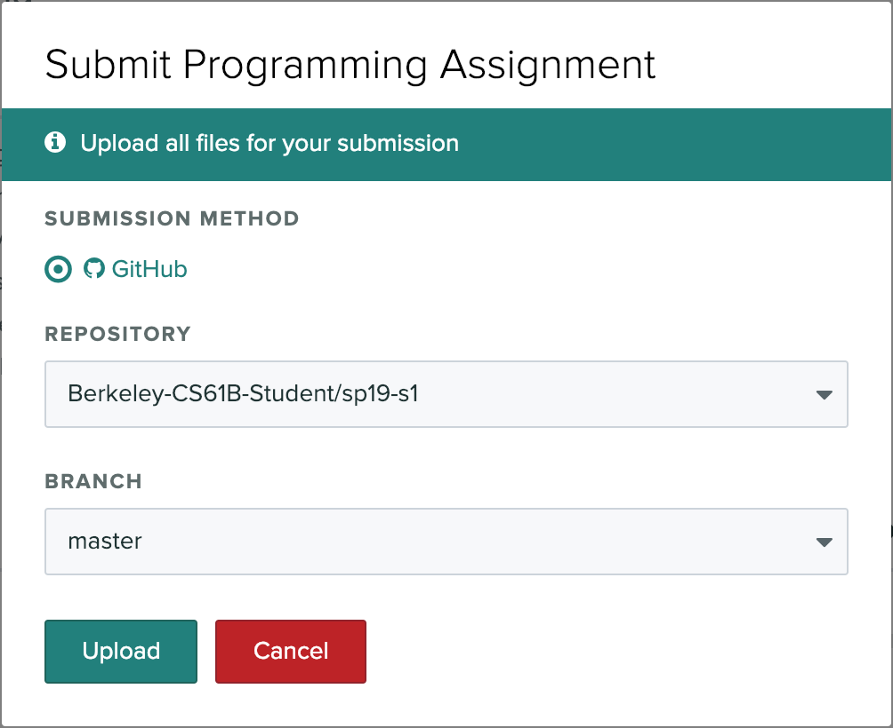

- Before You Begin
- GitHub and Beacon
- A. Java Compilation & Development
- B. Git & Local Repos
- C. Git Exercise
- D. Git & Remote Repos
- E. Leap Year
- F. Submitting Lab 1
- Recap
Before You Begin
- Before beginning this lab, complete lab1setup to install software required for 61B.
- Be aware that there are a large number of setup steps this first week. Don’t be discouraged, and make sure to ask for help if you’re stuck!
-
For those of you who have been working ahead, do not use IntelliJ (from Lab 2) today. For today's lab, please work from the command line to compile and run your code.
- Warning: This lab runs a little long, and it’s normal if you do not finish during your lab period, especially if you end up having a tricky setup issue that requires a lot of assistance.
- It’s OK to talk to other students while you work on this lab (or any other), but you should ultimately do all the typing/programming/entering-of-commands yourself. There’s a lot of important setup information in this lab that you need to have done independently of anyone else.
GitHub and Beacon
Instead of bCourses, CS61B uses an in-house system for centralizing your grades and student information called Beacon.
In this section, we’ll set up your Beacon account as well as your CS 61B GitHub repository (“repo”), which you will need to submit all coding assignments.
- Create an account at GitHub.com. If you already have an account, you do not need to create a new one.
- Go to the Beacon website and you’ll be guided through a few steps to complete your GitHub repository registration. Please follow them carefully! You must be logged in to your Berkeley account to complete the Google Form quiz. If any errors occur while you’re working through the steps, please let your TA know immediately.
- After completing all of the steps, you should receive an email inviting you to collaborate on your course GitHub repository, accept the email invitation and you should be good to go. Hooray! Don’t follow the instructions that GitHub says you might want to do – instead, follow the instructions given later in this lab.
More details about your repository
Your repository will have a name containing a number that is unique to you! For instance, if your repo is called “fa20-s42”, you’ll be able to visit your private repository at https://github.com/Berkeley-CS61B-Student/fa20-s42 (when logged into GitHub).
Additionally, the instructors, TAs, and tutors will be able to view your repository. This means you can (and should!) link to your code when asking private debugging questions on Ed. No other students will be able to view your repository. As a reminder, you may not post code from this course publicly, even after completing the course. Doing so is a violation of our course policies and you might be subject to disciplinary action.
When you work with your lab partner, you’ll also receive a separate shared repository that you should use for labs. More details will be provided later.
Additionally, after registering with Beacon, you will be invited to collaborate on another repo of the form “snaps-fa20-sXXX” - don’t worry about what this repo is for now, just accept the invitation so you have access to it. We will have more information about these “snaps” repositories in lab2!
A. Java Compilation & Development
Before proceeding, make sure you’ve installed Java on your computer as described in the lab 1 setup linked above.
Introduction to Java
Complete exercises 1.1.1 and 1.1.2 from the Hug61B
textbook. Also consider reading Chapter 1.1 as a review of what you’ve already seen in lecture. Note that the videos embedded in the textbook are just the lecture videos, so there’s no need to watch them again. When you’re done, you should have a HelloWorld.java and HelloNumbers.java file.
For this lab, you should use the command line, not an IDE like IntelliJ or Eclipse (see Lab 2). Don’t worry about submitting your work yet, we’ll cover how to do that later in this lab.
B. Git & Local Repos
In 61B, you’ll be required to use the Git version control system, which is wildly popular out in the real world. Unfortunately, the abstractions behind it are fairly tricky to understand, so it is likely that you will encounter significant frustration at some point as you learn to use Git.
Before you proceed, read sections A-C of Sarah Kim’s Using Git Guide
You do not need to read section D or later.
C. Git Exercise
Now that you’ve read the first 3 sections of the Using Git Guide, you’re now ready to start using Git! If you’re stuck on a step at any point, don’t hesitate to ask a TA or an academic intern for help!
If you need help with creating directories, creating files, changing directories, etc., see section B of lab1setup.
-
First, tell Git your name and email address so that your commits are correctly attributed to you. Run the following commands:
Replace “Your Name” with your name, and “you@berkeley.edu” with your email address. You should use the email address that you used to sign up for GitHub with. If that’s not your “@berkeley.edu” email address, that’s okay.
$ git config --global user.email "you@berkeley.edu" $ git config --global user.name "Your Name" - Create a directory called lab1-exercise. You should put this folder on your desktop.
- Move into the lab1-exercise directory using the
cdcommand, and initialize a Git repository in this directory. Make sure you are in the lab1-exercise folder before initializing the repository.. - Create a file called
61b.txtin any way you’d like. In this .txt file, add the text “61b version 1” into it. - Create another file called
61c.txtin any way you’d like. In this .txt file, add the text “61c version 1” into it. - Begin tracking only
61b.txt, and create a new commit containing just this file, with the following commit message: “Add 61b.txt”. - Make a modification in
61b.txtby changing the text in the file to: “61b changed to version 2”. - Make another commit, this time containing both
61b.txtand61c.txt. The commit message should be: “Update 61b.txt and add 61c.txt”. - Finally, make one more modification to
61b.txtby changing the text in the file to: “61b changed to version 3”. Don’t commit this version. -
Type in
git status, and you shuold see something similar to below:/lab1-exercise $ git status On branch master Changes not staged for commit: (use "git add <file>..." to update what will be committed) (use "git checkout -- <file>..." to discard changes in working directory) modified: 61b.txt no changes added to commit (use "git add" and/or "git commit -a") -
Now try
git log, and you should see something like:/lab1-exercise $ git log commit 273f3c4ed84df2c8f8accd1b807b9f3744779e95 (HEAD -> master) Author: Eli Lipsitz <eli.lipsitz@berkeley.edu> Date: Fri Jan 11 17:27:52 2019 -0600 Update 61b.txt and add 61c.txt commit d1f0d2b0423d0b88fe6474d4d821ec873f1c376b Author: Eli Lipsitz <eli.lipsitz@berkeley.edu> Date: Fri Jan 11 17:27:26 2019 -0600 Add 61b.txt -
Use the
git checkoutcommand to revert your 61b.txt back to the original commit, i.e. the one where 61b.txt says “61b version 1”. Note: Be careful when using the checkout command, as your repo might end up in an unexpected state. Specifically, if you see something about your repository being in a detached HEAD state as a result of a checkout command, that is something we don’t want. Read here for more on what it is and how to fix it. -
Verify that your checkout command from the previous step actually caused the 61b.txt to be reverted.
- Perform
git add 61b.txtandgit commitwith a message that says something like “revert 61B back to its original form.”
D. Git & Remote Repos
We’re now ready to finish off the lab. But first…
STOP! Before you proceed, read section D of the Using Git Guide
Here is the link to the guide. There is no need to read sections E or later. Those are for your later reference, and do not need to be read during this lab.
In 61B, you’ll be required to submit your code to your personal GitHub repository. This is for several reasons:
- To spare you the incredible agony of losing your files.
- To provide frequent checkpoints of your work so that you can go back to an earlier version if you find you’ve somehow broken your code.
- To submit your work for grading and to get results back from the autograder.
- To ensure that we have easy access to your code so that we can help if you’re stuck.
- To dissuade you from posting your solutions on the web in a public GitHub repository. This is a major violation of course policy!
- To expose you to a realistic workflow that is common on every major project you’ll ever work on again.
- To enable safer, more equitable partner collaborations.
Note: If you use multiple computers in this course, you’ll need to repeat the steps below on every computer that you use.
-
Clone your Berkeley-CS61B-Student organization repository.
- Navigate to the spot in your folders on your computer where you’d like to
start your repository. In the example below, I’m assuming you want all your stuff in a folder named cs61b, but you can pick a different name if you’d like.
$ cd cs61b - Enter the following command to clone your GitHub repo. Make sure to
replace the
s**with the class id you were given when you registered for your repo.$ git clone https://github.com/Berkeley-CS61B-Student/fa20-s**.gitIf you’d like to use SSH instead of HTTPS (and set up your own SSH key), feel free to also do that instead. If you don’t know what any of this means, just use the command above. The advantage of SSH is that you won’t have to type in your GitHub password every time you use your repository.
- Move into your newly created repo! (Make sure you do this part, or the
rest of the steps below will not work correctly.)
$ cd fa20-s**
- Navigate to the spot in your folders on your computer where you’d like to
start your repository. In the example below, I’m assuming you want all your stuff in a folder named cs61b, but you can pick a different name if you’d like.
-
Add the
skeletonremote repository. You will pull from this remote repository to get starter code for assignments. (Make sure that you are within the newly created repository folder when the continue with these commands.)- Enter the following command to add the
skeletonremote.$ git remote add skeleton https://github.com/Berkeley-CS61B/skeleton-fa20.git - Listing the remotes should now show both the
originandskeletonremotes.$ git remote -v - If you get an error that says “Not a git repository”, make sure you’re in the
fa20-s**directory.
- Enter the following command to add the
Working on the Skeleton
- You must now pull from the
skeletonremote in order to get the starter code for Lab 1. You will also do this when new projects and assignments are released. To do this, use the spookiest command in the whole git toolbox:$ git pull skeleton masterWhat this does is grab all remote files from the repo named
skeleton(which is located athttps://github.com/Berkeley-CS61B/skeleton-fa20.git) and copies them into your current folder.If you get an error similar to “fatal: refusing to merge unrelated histories”, you probably ran GitHub’s suggested commands when you created your repository. To fix this, you can instead run:
$ git pull --rebase --allow-unrelated-histories skeleton masterthis time only.
-
If you list the files in your current directory, you’ll see that there are now many folders including one named
lab1Look in thelab1folder and you’ll see a file calledLeapYear.javathat you’ll work with in later parts of this lab. -
Move the
HelloWorld.javaandHelloNumbers.javathat you previously created into thelab1directory. If you didn’t createHelloNumbers.java, go back and do Exercise 1.1.2 (see part A of this lab). - Stage and commit
HelloWorld.javaandHelloNumbers.java.$ git add lab1/* $ git commit -m "completed first part of lab1" - Push these changes to the
masterbranch on theoriginremote repo.$ git push origin masterYou can verify that this has been successful by viewing your repo on github.com. For example, if your repo were
fa20-s42, you’d go to https://github.com/Berkeley-CS61B-Student/fa20-s42.If you get an error similar to “Updates were rejected because the tip of your current branch is behind its remote counterpart”, and you had to use the “–allow-unrelated-histories” flag in the first step, add the
-f(force) flag to yourgit pushcommand this time, and this time only:$ git push -f origin master
E. Leap Year
In the lab1 folder, you should see a file called LeapYear.java. This program is supposed to test whether or not a given year is a Leap Year. The user will
give a year as a command line parameter (examples given below), and then print out whether or not that year is a leap year, e.g.
$ java LeapYear 2000
2000 is a leap year.
$ java LeapYear 1999
1999 is not a leap year.
$ java LeapYear 2004
2004 is a leap year.
$ java LeapYear 2100
2100 is not a leap year.
A leap year is either:
- divisible by 400 or
- divisible by 4 and not by 100.
For example, 2000 and 2004 are leap years. 1900, 2003, and 2100 are not leap years.
Your code must declare a method as follows: public static boolean
isLeapYear(int year). This method will be tested by the Gradescope autograder. Make sure to provide a description of the method as a comment. Your description should be contained by /** and */. Comments contained by /** and */ are also called “Javadoc comments” or just “Javadocs”. These comments can span multiple lines if they need the extra space, e.g. the checkLeapYear Javadocs.
Javadocs may contain optional tags, e.g. @param. We do not require you to use any tags like this in 61B except the @source tag. Use the @source tag any time you receive significant help on a project. The @source tag is not required for HW or lab, though we recommend it anyway, since it’s a good scholarly and professional habit to cite your sources.
Some Java tips:
- The
%operator implements remainder. Thus, the value ofyear % 4will be0,1,2, or3. - The
!=operator compares two values for inequality. The code fragmentif (year % 4 != 0)reads as “if the remainder when dividing year by 4 is not equal to 0.” - When one of the arguments of the
+operator is a String, the arguments are concatenated as Strings. For example,"horse"+"babies"would return"horsebabies"
F. Submitting Lab 1
The last step is to submit your work with Gradescope. Gradescope is the site that you’ll use to submit homework, lab, and project assignments. To sign up for Gradescope (if you haven’t already), head to gradescope.com and click on the white “Sign up for free” button in the middle. You should use your Berkeley email. You should have already been enrolled in our Gradescope page with your Berkeley email.
Once you’re enrolled in the class on Gradescope, click on “Lab 1: Welcome to Java” to submit your code.
After clicking this button, you’ll be taken to a screen where you select your repository and branch (shown below). The first time you do this, you’ll have to link your GitHub account to Gradescope (similar to what you did on the registration website). Click the “Connect to GitHub” button and follow the instructions.
Now select your repository and branch. If your repository is “fa20-s1”, you’ll select “fa20-s1” in the top box, and in the bottom box you’ll pick “master”.
Later, you can create your own “branches” (as described in the advanced part of the Git Guide) if you want those graded instead, though that won’t be required in 61B.

Now press “Upload” to submit!
Please report any issues you may have to Ed. Entire error messages and/or screenshots are welcome.
Important: We HIGHLY encourage you to make frequent commits! Lack of proper version control will not be considered an excuse for lost work, particularly after the first few weeks.
Recap
-
Java is a compiled language. You can use
javacandjavato compile and run your code. -
Java is an object-oriented language. Every Java file must contain either a class, interface, or enum.
-
When running a Java program, the
mainmethod runs. Thismainmethod can call other methods/classes in the program. -
Git is a version control system that tracks the history of a set of files in the form of commits.
-
Commit often and use informative commit messages.
-
Pull from the
skeletonremote repository to get or update starter code for assignments. -
Use Gradescope to submit homework, labs, and projects.